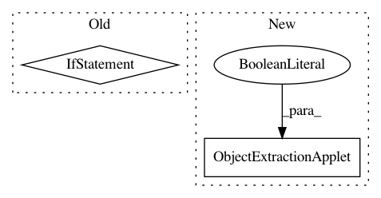

9418883d418ecccd7fe5da4dddffdc01064efb23,ilastik/workflows/counting/countingWorkflow.py,CountingWorkflow,__init__,#CountingWorkflow#Any#Any#Any#Any#,38
Before Change
self._applets.append(self.dataExportApplet)
if appendBatchOperators:
// Create applets for batch workflow
self.batchInputApplet = DataSelectionApplet(self, "Batch Prediction Input Selections", "BatchDataSelection", supportIlastik05Import=False, batchDataGui=True)
self.batchResultsApplet = CountingDataExportApplet(self, "Batch Prediction Output Locations", isBatch=True)
// Expose in shell
self._applets.append(self.batchInputApplet)
self._applets.append(self.batchResultsApplet)
// Connect batch workflow (NOT lane-based)
self._initBatchWorkflow()
@property
def applets(self):
return self._applets
After Change
self.dataExportApplet = CountingDataExportApplet(self, "Density Export")
opDataExport = self.dataExportApplet.topLevelOperator
opDataExport.PmapColors.connect(opCounting.PmapColors)
opDataExport.LabelNames.connect(opCounting.LabelNames)
opDataExport.UpperBound.connect(opCounting.UpperBound)
opDataExport.WorkingDirectory.connect(opDataSelection.WorkingDirectory)
self._applets = []
In pattern: SUPERPATTERN
Frequency: 3
Non-data size: 2
Instances
Project Name: ilastik/ilastik
Commit Name: 9418883d418ecccd7fe5da4dddffdc01064efb23
Time: 2014-03-26
Author: bergs@janelia.hhmi.org
File Name: ilastik/workflows/counting/countingWorkflow.py
Class Name: CountingWorkflow
Method Name: __init__
Project Name: ilastik/ilastik
Commit Name: d29d4bfe230a51fb4e016c4d6237337389d98669
Time: 2013-05-17
Author: bergs@janelia.hhmi.org
File Name: ilastik/workflows/carving/carvingWorkflow.py
Class Name: CarvingWorkflow
Method Name: __init__
Project Name: ilastik/ilastik
Commit Name: 9418883d418ecccd7fe5da4dddffdc01064efb23
Time: 2014-03-26
Author: bergs@janelia.hhmi.org
File Name: ilastik/workflows/autocontextClassification/autocontextClassificationWorkflow.py
Class Name: AutocontextClassificationWorkflow
Method Name: __init__